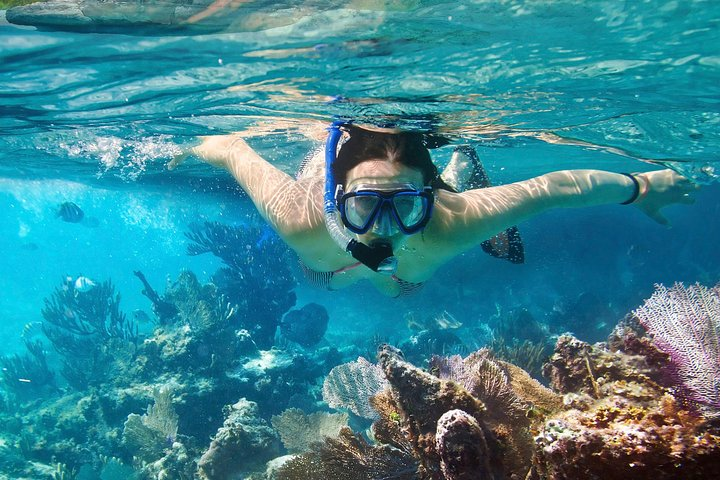
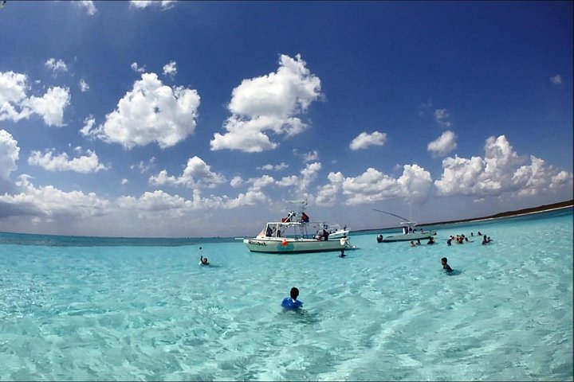
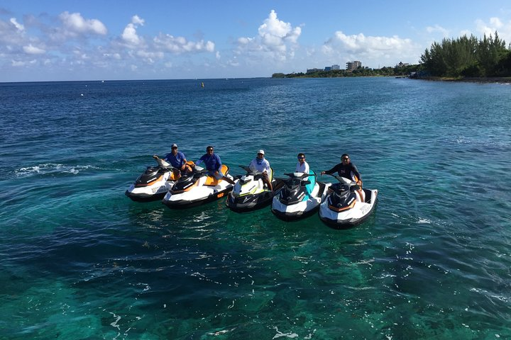

Tours
Palancar, Columbia and Cielo Reefs
Marine-life lovers can discover the colorful reefs off the coast of Cozumel from above and below the surface on a glass-bottom boat tour that stops for snorkeling at three different reefs. Each reef is home to a diverse array of marine life, making it possible to spot sea stars, sea turtles, nurse sharks, and vibrant schools of fish on each snorkeling venture.
Private Marine Park Snorkel
Experience Cozumel’s natural beauty on this snorkeling adventure to El Cielo. Head out on a 29-foot (9-meter) offshore powerboat with twin 350 HP outboards, then dive in with complimentary snorkel gear and explore the Caribbean’s magical waters. Check out a protected cove, El Cielo, take an optional fishing excursion, and enjoy fresh fruit, chips, guacamole, and beer—they’re included in the tour price.
Jet Ski and Snorkel Adventure Tour
This tour provides the possibility of riding a jet ski and snorkeling in a reef full of life, as well as giving access to all the facilities of the San Francisco beach club. Includes food and drinks on a beautiful beach.